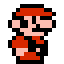

SUPER MARIO BROS. 3
World 1-1 / Browser demo 0.6.0
About this demo & controls
A browser port of the RISC OS prototype, with corrected original ROM graphics and World 1-1 geometry. Game behaviour is a reconstruction, not the full original game. Raccoon flight, tail attacks and generated parallax scenery are included. Bonus areas and other suits are still in development.
Keyboard: arrows or Z/X move, Space jumps, Shift runs, Down ducks. Hold Run to carry a stationary shell and release to throw. P pauses, R restarts, F toggles fullscreen. V toggles glow, shadows, trails and particles. Raccoon: collect a leaf as Super Mario, run until P fills, jump, then tap Jump to flap. Tap Jump while falling to flutter, and tap Run for a tail attack. The quick-start button begins airborne with the meter charged. Controller: D-pad / left stick moves, A (bottom face button) jumps, X or B runs, Down ducks, Start pauses, Select restarts. Press a face button to begin. Standard browser-mapped Xbox, PlayStation and other controllers are supported; mappings vary by device.
The protected demo ignores enemy damage. Move or jump to take manual control. Sound starts when you play. The Sound button mutes all audio; The Music button (or M) controls the original ROM music separately. Music and effects are rendered from the supplied ROM using its original sound driver and NES audio emulation.
Original game and artwork © Nintendo. Research reference: Southbird’s SMB3 disassembly. This is an unofficial development prototype.